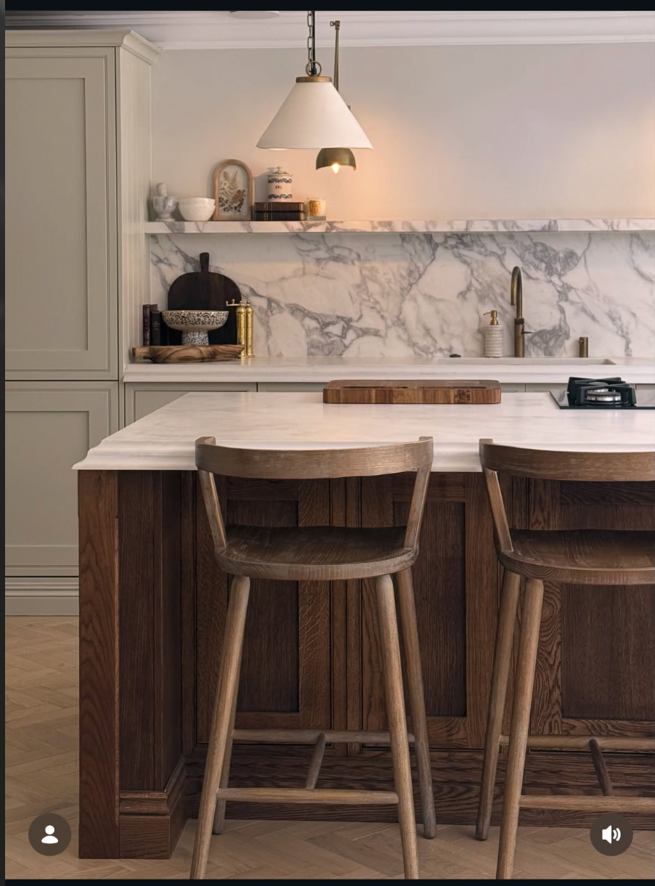
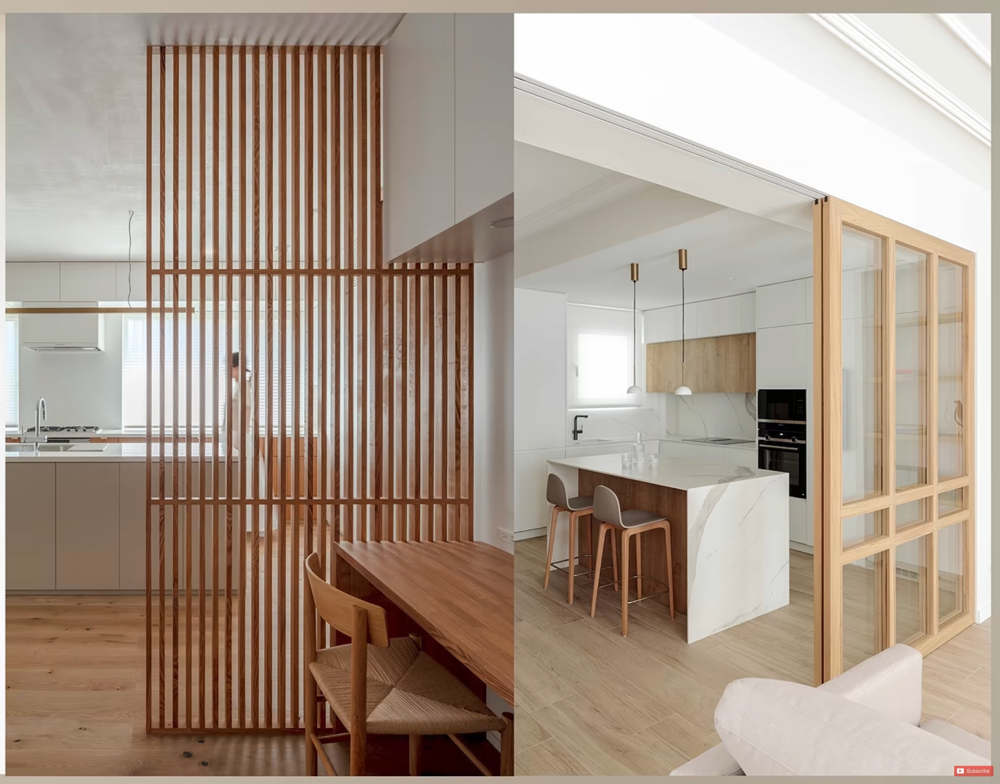

What does the hall give us?
The existing hall is a separate route to the living room, snug, guest room, stairs and WC. Its width can be tested. Removing its kitchen wall gives a larger shared space, but the walking route still needs room.
Dimensions in metres. Garden at top; assumed north at bottom. Furniture footprints are schematic. Routes are centre lines, not clearance certification.
| Measured baseline | Size / area | What to test |
|---|---|---|
| Living and dining | 6.20 × 8.95 m / 55.49 m² | Keep the lounge sheltered and the route outside the furniture group. |
| Kitchen | 18.86 m², L-shaped | Core width 3.90 m; 2.40 × 1.00 m island. |
| Hall and entrance | 18.84 m² | 1.55 m cross-hall; 1.80 m entrance leg. |
| Pantry + utility | 16.22 m² shared shell | 1.05 m opening past the short divider. |
| Separate pantry | 1.65 × 2.10 m / 3.47 m² | Retain the direct concealed kitchen door. |
Open, screened or closed.
Test three oak-framed glazed leaves across the existing 2.40 m kitchen opening. In the open state they stack beside the opening, over the existing 1.30 m wall return.
The diagram uses a 2.40 m door height with a glazed upper panel to the proposed 3.20 m ceiling. Frame sizes, tracks and support are allowances for this study.
Between dining and living, test a 1.20 m fixed slat screen at the left-hand wall in the plan. It is a partial visual boundary, leaving the rest of the 6.20 m room width open. It does not close the lounge.
Panel overlap will reduce the exact clear width. The stacked panels need depth as well as wall length. Confirm the opening structure, tracks and handles before detailed modelling.
Let light connect the rooms.
Bright edges
The garden bifolds and side windows bring light into living and dining. The kitchen has its own garden-facing window. Keep tall furniture away from these light paths.
Filtered boundaries
Clear glazing carries light across the kitchen boundary. Timber slats filter views and cast changing shadows when direct light reaches them. Use the slats in one limited area first.
Quieter inner spaces
Warm ivory walls and a pale ceiling can reflect light into the room. Dark oak adds contrast at the island. Keep that darker finish concentrated so the kitchen does not become uniformly dark.
Next light test: compare the selected layout under an overcast sky and low-angle direct light, with the glazed divider open and closed. Keep the camera and exposure fixed. Include curtains and inset shutters so their effect is visible.
Details that carry into the next model.


Tap direction
Keep the Belfast-style sink. Test a single lever for flow and temperature, a swivel spout and a pull-out or pull-down rinse for cleaning the bowl.
BLANCO VICUS-S: pull-out / spray reference ↗
Perrin & Rowe Armstrong: pull-down reference ↗
Function references only. Exact shape, finish and compatibility remain open. No asset purchases.
My recommendation
Compare B and C before choosing. B retains separation and gains about 2.05 m² for the kitchen, but the current stool positions still leave limited space behind them. C gives the greatest freedom to arrange the island and stools, but needs a proper entrance/WC transition and changes the route to the stairs.
Keep both pantry options. The enclosed version needs a separate decision about a utility-to-pantry door if you want the same direct shopping route.
Send the new stool reference when ready. No stool design has been selected from the first sheet.